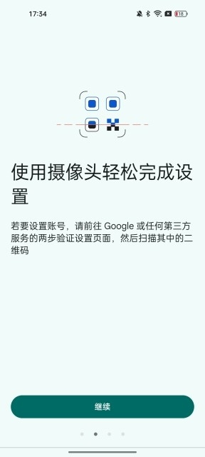
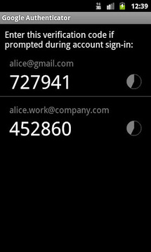

Authenticator 深度盘点：从绑定到换机，把验证器用对的完整地图
双因子验证已经成了账户安全的标配，但绝大多数人只停留在「扫码出码」这一步。本文从绑定纪律、日常管理、云同步策略、故障排查四个维度，系统盘点 Authenticator 真正能做的事以及容易踩的坑。
双因子验证（2FA）在今天已经不是什么新鲜事了——几乎每一家有点安全意识的平台都提供了「验证器应用」作为登录第二步。但大多数人的使用方式其实只完成了「扫码 → 出码 → 回填」这三步，剩下的空白地带恰恰是 Authenticator 这套产品设计真正有价值的地方：密钥的保管纪律、多账号的归属管理、云同步的分层策略、换机时不该踩的那些弯路。
这篇盘点把 Authenticator官网 从「出码工具」往前后各拉一段——前面讲到绑定阶段必须守住的几条铁律，中间覆盖日常使用中最容易被忽略的管理能力，后面走到云同步、换机迁移和故障排查。四个维度串起来，差不多就是从第一次安装到用了两年换机重绑的完整生命周期。
能力域一：绑定阶段——纪律比动作本身重要
如果你还没装这款应用，从 官方下载 拿安装包就行。扫码绑定的动作在所有平台之间高度一致：进安全设置、开两步验证、扫码、回填验证码。流程本身没有什么悬念，差异全在绑定之后是否守住了几条纪律。样本里交易所那篇文档把这个点讲得最清楚——资金类平台的绑定页在二维码下方一定会显示一串 16 位左右的字母数字密钥，这串东西才是手机丢了之后重新出码的唯一凭据。
纪律的核心其实就两条：密钥当场留底，绑定后立即验证。留底的关键是「与手机物理隔离」——用纸抄、存进离线密码管理器都行，但别存在手机相册和聊天记录里；部分平台还会给一组一次性备用验证码，同样需要归档到手机之外。绑定完成后不要直接关掉设置页，实际走一次验证流程（登录或触发一次需要验证码的操作），确认码能被平台接受。

给 Google 自家账号绑定时有个特殊点：系统最长可能需要七天才会把验证器显示为可用的登录选项，这是 Google 在防范账号盗用。已经有通行密钥或安全密钥的用户可以缩短这个等待期，但普通用户需要有这个预期，别绑完当天就急着看它有没有生效。
能力域二：日常出码与多账号管理——不只是「打开看一下」
对于大部分用户来说，Authenticator 就是打开看一眼、抄六位数字、关掉。但当你手里挂了十几个甚至几十个平台账号时，日常管理的效率和可靠性就开始变得重要了。
最基础的管理动作是给条目改名字。很多平台默认拉过来的名称就是网站域名，当你同时绑了「github」「github-gist」「github-pages」时，靠名称区分会很痛苦。左滑条目进入编辑态，可以把名称改成自己一眼能认出的格式——比如「GitHub（主账号）」「GitHub Pages 站群」。
多 Google 账号并存是另一个经常被忽略的能力。Authenticator 支持在同一个应用里登录多个 Google 账号，每条验证码归属其中一个。这意味着你可以把工作账号的验证器和个人账号的分开挂载，不会互相干扰。但对应的代价是：任何一个账号退出登录，挂在它名下的所有条目就会一起消失——这不是数据丢了，是账号的会话被收走了。遇到这种情况先检查右上角的头像，看是不是登错了账号。

能力域三：云同步与换机迁移——最容易踩坑的区域
云同步是 Authenticator 这几年加进来的功能，官方宣传是「多设备无缝共享验证码列表」。但实际使用中，同步不合并去重这个设计行为让很多人栽过跟头。
典型剧本是这样的：旧手机上早就有几个纯本地绑定的账号，某天想试试云同步，登录了 Google 账号——列表里同一个平台账号立刻出现两条一模一样的条目。根因是云同步把云端列表拉到设备上，但不会把设备已有的本地条目与云端条目识别为同一条。两条密钥明明是同一把，应用按来源分开陈列。
正确的开启顺序应该反过来：先在应用设置里登录 Google 账号（此时列表只有云端旧条目或是空的），再添加账号扫码绑定。此后所有条目天然带云端归属，不存在本地副本。已经攒了本地条目的设备，最干净的做法是先把本地条目删掉或者卸载重装，登录账号拉云端列表，对缺失的平台重新绑定——听起来绕远路，实际比每次出码都要在两条之间做选择题省心得多。
换机场景对应另一条纪律：别在旧机上先开同步再导入。想清楚新机要走哪条路线——要纯本地就保持新机不登录账号，导入完再说；要直接上云就登录账号拉列表，跳过本地条目环节。
能力域四：故障排查——验证码消失了怎么办
打开应用发现列表空了，这是 Authenticator 最让人恐慌的时刻。排查的第一步是先分辨是「全部消失」还是「个别条目不见」——两者的根因完全不同。
全部消失几乎一定是登录状态问题。云同步模式下验证码列表挂在 Google 账号上，退出登录列表就收走了。排查顺序：点头像看还在登录吗？登录的是你以为的那一个账号吗？多账号用户经常在这个环节翻船——以为登的是主账号，实际是工作账号。登录对了仍是空的，重启应用再检查网络。
个别条目不见更大概率是归属问题或者误删。Authenticator 支持多 Google 账号并存，每条验证码归属于其中一个——切换头像查看每个账号的列表，很可能那条「消失」的只是挂在了另一个账号名下。如果切换完所有账号都找不到，再回忆一下是否有其他设备操作过删除——云同步的删除是全局动作，任何一台设备上的右滑删除会让所有同步设备的条目一起消失，而且没有 undo。
实在找不回的兜底路径只有一条：去对应平台用备用验证码登录，重新绑定。这也是 authenticator文档 里反复强调「备用码当场存」的原因——它是验证码消失后的唯一退路。
短板也要说
Authenticator 的产品设计有几个客观局限，用之前需要心里有数。
第一，云同步的安全性是把双刃剑。方便的同时意味着高价值账号的密钥副本挂在了 Google 账号的安全等级上。如果你的 Google 账号本身被盗，验证器的同步数据也会被一起带走。对于交易所、支付类账户这类资金直接挂钩的场景，分层策略会更稳妥：普通账号开同步图省心，资金账号的密钥留在本地，靠第一条纪律的纸质留底来兜底。
第二，没有本地备份导出。Authenticator 不提供把全部密钥导出到本地文件的能力（出于安全考虑），这意味着纯本地用户换机时必须靠平台重新绑定，或者依赖 Google 云同步。如果你完全不想用云同步，就要对「换机时花半天重新绑十几个平台」这件事有心理准备。
第三，没有桌面端独立应用。Android 和 iOS 之外，桌面环境没有对应的 Authenticator 客户端，需要用第三方 TOTP 兼容应用或者依赖浏览器扩展。
什么样的人该用它
三类人会从 Authenticator 的完整能力里获益最多。
第一类是手里挂了大量平台账号的重度用户。十几个、几十个平台同时绑在验证器里，改名、分组、多账号归属这些管理能力会直接影响你每次出码的效率。同步开与不开、什么时候开，取决于你这些账号的价值分层。
第二类是需要跨设备出码的人。手机不是唯一携带的设备，或者经常需要备用机顶上的场景，云同步的便利性是纯本地应用给不了的。但前提是用正确的顺序开启，避开重复条目的坑。
第三类是对资金安全有较高要求的用户。交易所、支付类平台的绑定纪律（密钥当场留底、绑定后立即验证、提现改绑的额外审核期、分层同步策略）是 Authenticator 文档里信息密度最高的部分，也是值得认真读完的部分。
上面盘点的这套资料在三个仓库都同步维护着，国内访问不通的时候可以换个源继续查——Github、Gitee、GitCode 各一份镜像，内容随时保持一致。